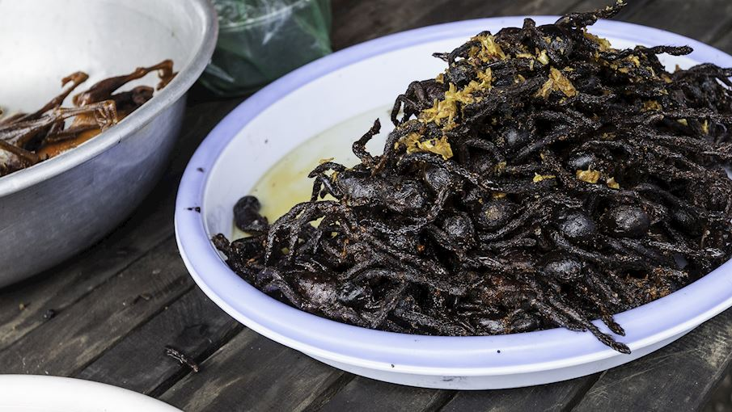

Fried Spider

The city of Skuon in Cambodia is so infested with spiders that the nearly-starved locals have adapted and started consuming them in the 1970s, and the practice has continued ever since. It is no wonder that the city is known as Spider Town or Spiderville.
Ingredients:
- 4-6 large tarantula spiders (cleaned and gutted)
- 1 tbsp vegetable oil
- 1 tbsp garlic (minced)
- 1 tbsp oyster sauce
- 1 tbsp soy sauce
- 1 tsp sugar
- 1/2 tsp salt
- 1/4 tsp black pepper
- 1 egg (beaten)
- 1/4 cup cornstarch
- Oil for frying
Steps:
- Clean the tarantula spiders by removing the legs and fangs, and removing the guts and other inedible parts. Rinse the spiders under running water and pat them dry with paper towels.
- In a small bowl, whisk together the vegetable oil, garlic, oyster sauce, soy sauce, sugar, salt, and black pepper to make a marinade.
- Place the spiders in a large ziplock bag and pour the marinade over them. Seal the bag and shake it to ensure the spiders are evenly coated with the marinade. Let them marinate for at least 30 minutes or overnight.
- Heat a large pot of oil over medium-high heat until it reaches 375°F (190°C).
- In a shallow dish, whisk together the beaten egg and cornstarch to create a batter. Dip each spider in the batter to coat it completely.
- Carefully lower each spider into the hot oil, one at a time, using tongs. Fry them for 3-5 minutes or until they are golden brown and crispy.
- Remove the spiders from the oil with tongs and place them on a plate lined with paper towels to drain any excess oil.
- Serve the Cambodian fried spiders hot, with lime wedges and a dipping sauce made of soy sauce, vinegar, and chili flakes if desired.